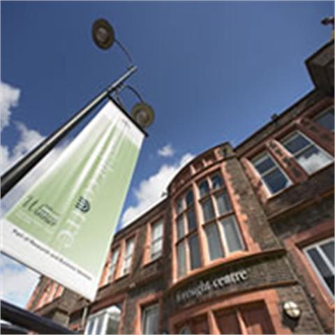
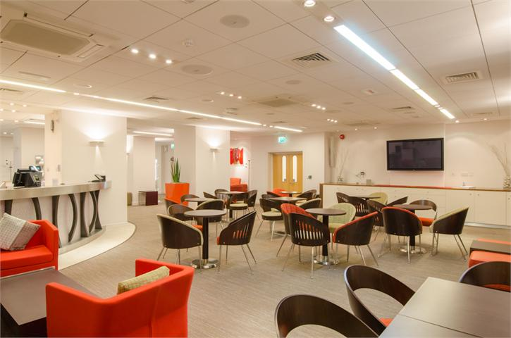
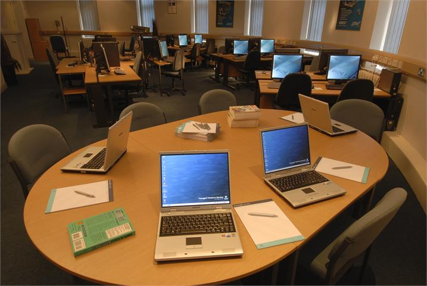
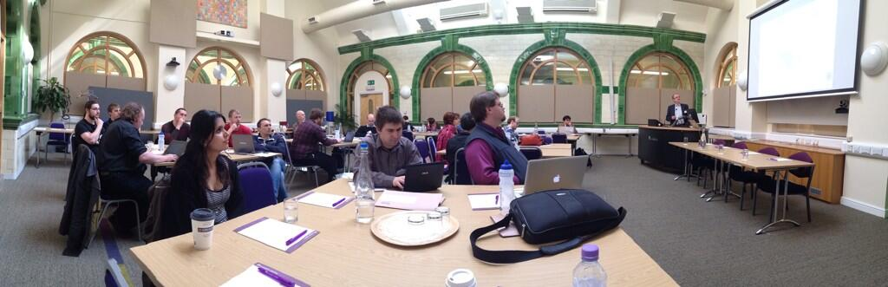

Sponsored/supported by:
L. Alvarez Ruso (Valencia)
C. Andreopoulos [*] (Liverpool/RAL)
S. Boyd (Warwick)
S. Dytman (Pittsburgh)
H. Gallagher (Tufts)
J. Morfin (FNAL)
J. Nowak (Lancaster)
G. Perdue (FNAL)
J. Sobczyk [*] (Wroclaw)
M. Wascko (Imperial)
Local support:
Linda Fielding (Liverpool)
Angie Reid (Liverpool)
[*] co-chairs
— Early registration deadline for potential school participants:
14th of March, 2014
— Registration deadline (if the maximum number of participants has not been reached earlier):
1st of May, 2014.
— The first invitations will be sent out on the
15th of March, 2014.
— The school will be held from
the 14th (Wedns.) to the 16th (Fri.) of May, 2014.
Welcome to the
2014 Neutrino Generator School page.
This is a generator training school, to be held at the
University of Liverpool in
14-16 May 2014.
To facilitate participation of overseas students,
the school is organised as a satellite event of the popular
NuINT14 workshop
to be held in London in 19-24 May 2014.
The school will provide a series of lectures covering a broad range of neutrino interaction phenomenology topics
focussing on the connections between theory, experiment and MC simulations.
The school will also offer extensive hands-on tutorials of the GENIE and NuWro MC generators.
Participation is by invitation and, due to the hands-on nature of the school, will be limited to about 30 students.
Priority will be given to students and young post-doctoral research associates.
Venue & Location
The school will be held in the
Foresight Centre,
the award-winning business conference centre of the
University of Liverpool in UK.
The Foresight Centre is located within the central campus and it is housed within one of the city's most
impressive Grade II listed buildings.



Liverpool in a UNESCO World Heritage City and a bustling metropolis
with a unique mix of contemporary and classic architecture.
With the largest collection of museum and galleries anywhere outside London,
and a fantastic selection of performance spaces,
it is an ideal culturally-rich setting for a summer school.
More information about visiting Liverpool may be found
here.
Programme
Click on the lecture titles to see the slides (PDF format).
| |
Theory & MC methods |
|
Hands-on tutorials |
|
Experiment |
School photos
School photos are posted on the school twitter stream (see on the right hand side).
Please feel free to upload any interesting photo you take during the school and your stay at Liverpool!

Logistics
Fees
The registration fee is £50 payable in cash at the registration desk.
The fee
includes the cost of the school dinner.
Mid-morning and mid-afternoon refreshments and lunches will also be provided.
School dinner
A school dinner is organized for Thursday 15th May at the
Quarter Liverpool.
Travel
The campus is centrally located. The Foresight Centre is just a 10-minute walk away
from the nearest mainline train station (Lime Street).
Directions can be found
here.
A pdf map showing all University buildings can be found
here.
Accomodation
School participants should make their own arrangements.
There is a large number of and B&Bs and hotels in walking distance from the University.
Search via
laterooms.com or
booking.com
(the University post code is L69 3BX). Some nearby hotels are listed below:
- Hope Street Hotel (4* VE)
40 Hope Str., Liverpool, L1 9DA. TEL: +44-1517-093000
- Novotel Liverpool Centre (4* AA)
40 Hanover Street , Liverpool, L1 4LN, TEL:
- Radisson Blu Hotel Liverpool (4* AA)
107 Old Hall Street , Liverpool, L3 9BD, TEL:
- Britannia Adelphi Hotel - City Centre (3*)
Ranelagh Place , Liverpool, L3 5UL, TEL:
- 62 Castle Street Boutique Hotel (3* VE)
62 Castle Street Boutique Hotel , Liverpool, L2 7LQ, TEL:
- The Liner at Liverpool (3* VE)
Lord Nelson Street, Liverpool, L3 5QB, TEL:
- Best Western Feathers Liverpool Hotel (3* AA)
117-125 Mount Pleasant, Liverpool, L3 5TF, TEL:
- Holiday Inn Liverpool City Center (3*)
Lime Street, Liverpool, L1 1NQ, TEL:
- Holiday Inn Express Liverpool - Albert Dock (3*)
Britannia Pavillion, Albert Dock, Liverpool, L3 4AD, TEL:
- Campanile Liverpool (2*)
Chaloner Str., Queens Dock, Liverpool, L3 4AJ, TEL:
- Ibis Liverpool Centre Albert Dock (2*)
27 Wapping, Liverpool, L1 8LY, TEL: